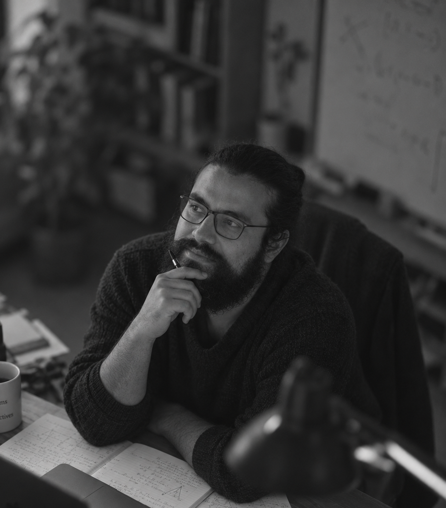

Curtaining Artifacts Generation on Synthetic FIB-SEM Data via Generative Adversarial Networks
My interests include numerical analysis, scientific computing, inverse problems, quantitative image analysis, and quantum computation. I am particularly interested in questions for which computation is not merely a tool for obtaining an answer, but a way of understanding what the underlying mathematical model can — and cannot — tell us.
I am a professor in the Department of Mathematics at the Universidad Nacional de Colombia, Bogotá , and I participate in research and academic activities of the Center of Excellence in Scientific Computing (CECC) .
Mathematics becomes most interesting to me when abstraction and computation illuminate the same question from different directions.

Research
My research has evolved from quantitative image analysis and mathematical modelling of material microstructures toward a broader interest in computational mathematics, inverse problems, and quantum methods. Across these topics, a recurring concern is the relationship between information, approximation, and what can be reliably inferred from data.
- Numerical analysis & scientific computing Approximation, numerical modelling, identifiability, computational experiments.
- Inverse problems & parameter estimation Recoverability, uncertainty, noisy observations, model-informed inference.
- Quantum computing Quantum algorithms, graph-based problems, numerical and scientific applications.
- Image analysis & material microstructures FIB-SEM imaging, reconstruction, quantitative image quality, synthetic data.
Earlier work was carried out at TU Kaiserslautern / RPTU and Fraunhofer ITWM in collaboration with researchers in statistics, image processing, and materials science.
Selected publications
Image Quality Evaluation for FIB-SEM Images
Reconstructing porous structures from FIB-SEM image data:
Optimizing sampling scheme and image processing
Simulating permeabilities based on 3D image data of a layered nano-porous membrane
Complete and current publication record: Google Scholar.
Teaching
I teach courses in pure and applied mathematics, with an emphasis on mathematical reasoning, computational experimentation, and the connection between theory and algorithms.
Numerical analysis
Approximation, numerical linear algebra, interpolation, differential equations.
Quantum computing
Mathematical foundations, circuits, algorithms, and computational applications.
Graph theory
Structure, algorithms, combinatorial reasoning, and applications.
Artificial intelligence
Mathematical foundations of learning methods and computational modelling.
Course materials are shared with enrolled students through the corresponding institutional or course platforms rather than indexed publicly here.
Contact
Department of Mathematics
Universidad Nacional de Colombia
Bogotá, Colombia
Email
dgroldanj [at] unal.edu.co
Google Scholar
LinkedIn
Research group
For institutional meetings, seminars, and student consultations, please use the official university channels.